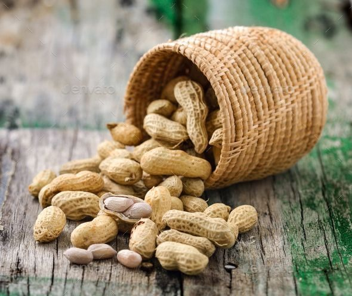

Groundnut Cultivation Guide

1. Land Preparation
Plow the land 2–3 times and make it weed-free.
Add organic manure (FYM or compost) before the last plowing.
Create ridges and furrows or flat beds depending on soil type.
2. Seed Selection & Sowing
Use certified, bold-seeded, disease-resistant varieties.
Seed rate: 75–80 kg per acre (depending on variety).
Sowing time: June–July (kharif) or November–December (rabi).
Spacing: 30–45 cm row to row and 10–15 cm plant to plant.
3. Water Management
Ensure proper moisture during flowering and pegging stage.
About 6–8 irrigations may be needed depending on climate.
Avoid waterlogging during pegging and pod development.
4. Fertilization Schedule
Basal Dose:
FYM (4–5 tons), SSP (40–50 kg), MOP (10–15 kg).
Calcium and gypsum are important during pegging stage.
5. Weed & Pest Management
Weeds:
Manual weeding or pre-emergence herbicide like Pendimethalin.
Pests:
Leaf miner, thrips — use recommended insecticides.
Diseases:
Tikka leaf spot, rust — apply fungicides as needed.
6. Investment Breakdown (Per Acre)
Input
Estimated Cost (INR)
Seeds
₹2,000 – ₹3,000
Fertilizers
₹1,500 – ₹2,000
Pesticides/Fungicides
₹1,000 – ₹1,500
Labor
₹6,000 – ₹8,000
Irrigation
₹1,000 – ₹2,000
Total Investment
₹11,500 – ₹16,500 per acre
7. Harvesting & Yield
Harvest when leaves turn yellow and pods mature (110–120 days).
Expected yield: 15–25 quintals per acre.
8. Market Rate & Profit Estimation
Average market price: ₹4,000 – ₹6,000 per quintal.
Gross returns: ₹60,000 – ₹1,50,000 per acre.
Net profit: ₹45,000 – ₹1,30,000 per acre.